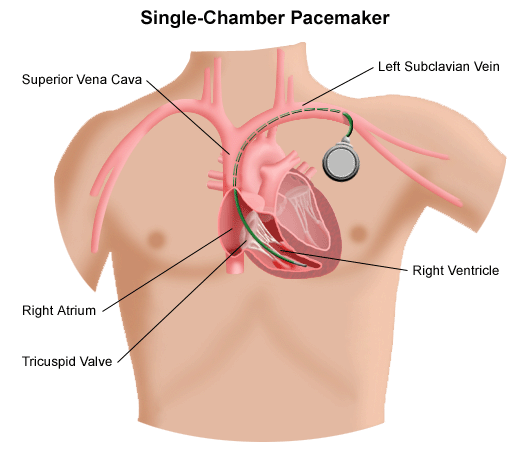
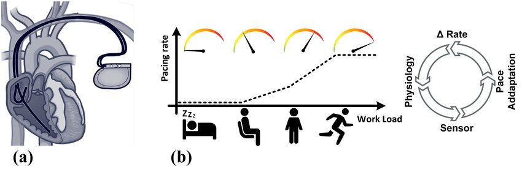
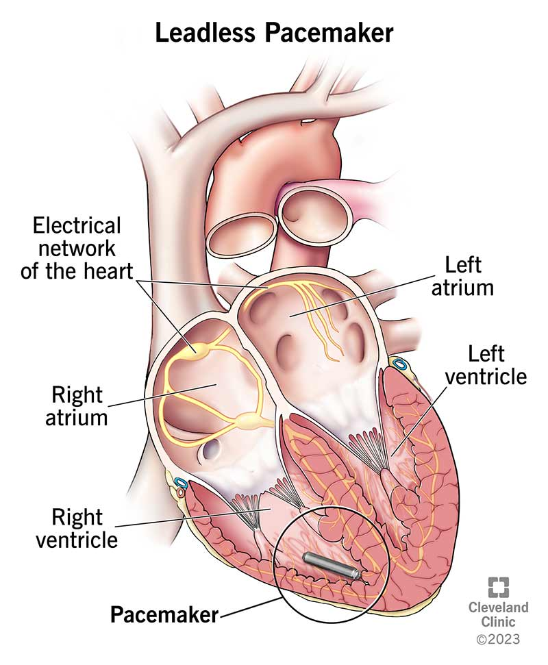
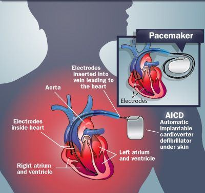
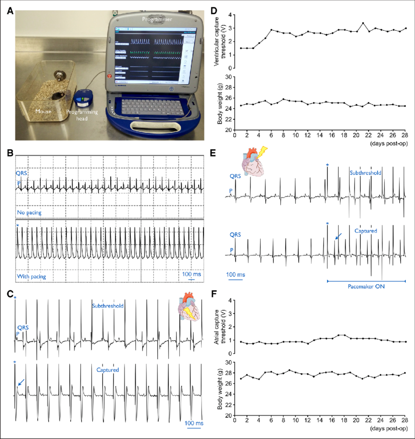

Comprehensive overview of modern cardiac pacemaker technologies
The evolution of the cardiac pacemaker spans over two centuries, beginning with early explorations into electricity and its effects on the human body. In 1774, Charles Kite documented using electricity to revive a child, and during the 1800s, scientists like Luigi Galvani and Alessandro Volta studied bioelectricity, setting the foundation for future cardiac research. By 1926, Dr. Mark C. Lidwill in Australia created the first external pacemaker—a hand-cranked device that revived a stillborn infant by delivering electrical pulses directly to the heart. In 1932, American cardiologist Albert Hyman refined this concept and coined the term “artificial pacemaker,” though his innovation was initially met with skepticism from the medical community.
The 1950s marked a turning point as electronics advanced rapidly. In 1950, Canadian engineer John Hopps developed the first electronic external pacemaker using vacuum tubes. Then in 1952, Dr. Paul Zoll created the first clinically used external pacemaker, which delivered electric shocks through chest electrodes. These devices were bulky and painful but demonstrated that reliable cardiac pacing was possible. The breakthrough came in 1958 when Swedish engineer Rune Elmqvist and surgeon Åke Senning developed the first implantable pacemaker. It was successfully implanted in patient Arne Larsson, who lived for decades with over 20 successive devices. This moment marked the true beginning of the modern pacemaker era.
In the 1960s, engineer Wilson Greatbatch and surgeon William Chardack in the United States designed a reliable implantable pacemaker powered by a mercury-zinc battery, which significantly improved device longevity and safety. The invention of lithium-iodide batteries in 1969 further extended the lifespan of pacemakers to more than a decade. The 1970s saw the development of transistor-based, programmable pacemakers that could be externally adjusted, improving patient customization. By the 1980s, rate-responsive pacemakers were introduced, which could automatically adjust pacing rates based on the patient’s activity level using motion or respiratory sensors.
The 1990s and 2000s brought more sophisticated designs like dual-chamber pacemakers, which could coordinate electrical stimulation between the atria and ventricles, improving synchronization for patients with heart block. Around the same time, biventricular pacing—or cardiac resynchronization therapy (CRT)—was developed to treat heart failure by synchronizing the contractions of both ventricles. MRI-compatible pacemakers were introduced in the 2000s, allowing patients with implanted devices to safely undergo MRI scans, previously a contraindication.
A major leap occurred in the 2010s with the advent of leadless pacemakers. Devices like the Nanostim and Medtronic Micra were implanted directly into the heart via a catheter, eliminating the need for wires (leads) and reducing infection risks. These tiny, capsule-sized devices also enabled less invasive procedures and faster recovery. Wireless technologies allowed remote monitoring, enhancing patient care and early detection of device or rhythm issues.
In the 2020s, cardiac pacemakers have become smarter and more adaptable. Modern pacemakers incorporate artificial intelligence to optimize pacing algorithms and use advanced biosensors to respond to physiological changes such as heart rate variability, respiration, and autonomic tone. Some models are rechargeable through wireless inductive charging, and materials have improved to enhance biocompatibility and reduce complications. As technology continues to evolve, future pacemakers may integrate with broader health-monitoring ecosystems and even be powered by the body's own kinetic energy.
A single chamber pacemaker is a type of cardiac pacemaker designed to stimulate one specific chamber of the heart—either the right atrium or the right ventricle ,depending on the patient’s condition. It is typically used in patients who have problems with the electrical signals that control the heart rate, such as bradycardia a slow heart rate) or certain types of heart block. The primary function of this pacemaker is to ensure that the heart maintains an adequate and consistent rate by sending timed electrical impulses when the heart’s natural rhythm is too slow or irregular.
In most cases, a single chamber pacemaker is implanted with a lead (a thin, insulated wire) inserted through a vein and positioned in the right ventricle, which is the lower chamber of the heart responsible for pumping blood to the lungs. This is known as a ventricular pacemaker and is the most common form of single chamber pacing. Less commonly, the lead is placed in the riight atrium—the upper chamber—particularly when the patient has sick sinus syndrome (a condition where the heart’s natural pacemaker doesn’t function properly), but the connection between atria and ventricles remains intact.
Single chamber pacemakers are relatively simpler than dual or biventricular systems and are often chosen for older patients, those with less active lifestyles, or when there is a specific, localized conduction issue. They are smaller, easier to implant, and carry fewer procedural risks. However, they may not provide optimal synchronization between the atria and ventricles, which could affect the heart’s efficiency in some individuals. That’s why in more complex rhythm disorders, dual chamber or more advanced pacemakers may be preferred.
Despite their simplicity, single chamber pacemakers have seen significant technological improvements. Modern devices can adjust pacing rates based on physical activity and include diagnostic features that help monitor the patient’s heart rhythm and the device’s performance. For many patients, especially those with straightforward bradyarrhythmias, a single chamber pacemaker offers a reliable and life-enhancing solution.

Dual-chamber pacemakers A dual chamber pacemaker is a device that stimulates both the right atrium and the right ventricle of the heart. It is designed to closely mimic the natural pacing of the heart by coordinating the timing between these two chambers. In a healthy heart, electrical impulses originate in the atria and then travel to the ventricles, allowing for a smooth and efficient contraction that pumps blood effectively. A dual chamber pacemaker replicates this pattern, ensuring that the atria contract slightly before the ventricles, which enhances cardiac output and improves blood flow.
Rate-responsive pacemakers use sensors to detect motion or breathing... 
Leadless pacemakers are capsule-sized devices implanted directly... 
Each pacemaker type has distinct advantages depending on cardiac conditions.
Electrical safety is foundational in pacemaker design and care. EMI (electromagnetic interference) is a major concern...
Leads are insulated with biocompatible materials to prevent current leakage. Lithium batteries last 5–15 years...
MRI machines generate strong fields, but many pacemakers are now MRI-conditional.
Pacemaker safety depends on smart design, EMI shielding, and long-term monitoring.
Pacemakers are Class III medical devices. The FDA (US) and CE (Europe) enforce strict regulatory approval...
Standards like ISO 14708 and ISO 13485 govern testing and manufacturing. Post-market surveillance (PMS) is also required.
Ethics and patient safety guide every development stage of pacemaker tech.
Standards ensure safety, quality, and innovation in cardiac care devices.
Pacemakers go through mechanical, electrical, and biological testing. Preclinical trials test longevity and safety.
Preclinical testing uses simulations and animal models. 
Clinical trials then assess human safety and performance. Software validation also plays a critical role.
Post-market surveillance continues to track performance after release.
Validation ensures real-world safety and functionality.
Future pacemakers will integrate with wearables and cloud systems for real-time data sync.
Biocompatible, self-healing materials will improve life span. Wireless power may eliminate battery surgery.
Multi-chamber leadless pacing and AI-driven adaptability will transform treatment personalization.
These technologies will make pacemakers more intelligent, efficient, and patient-centric.